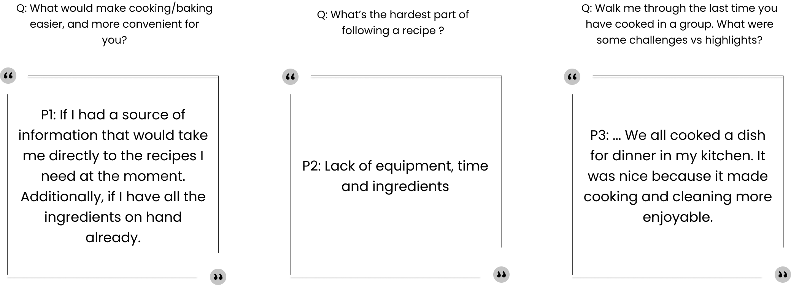
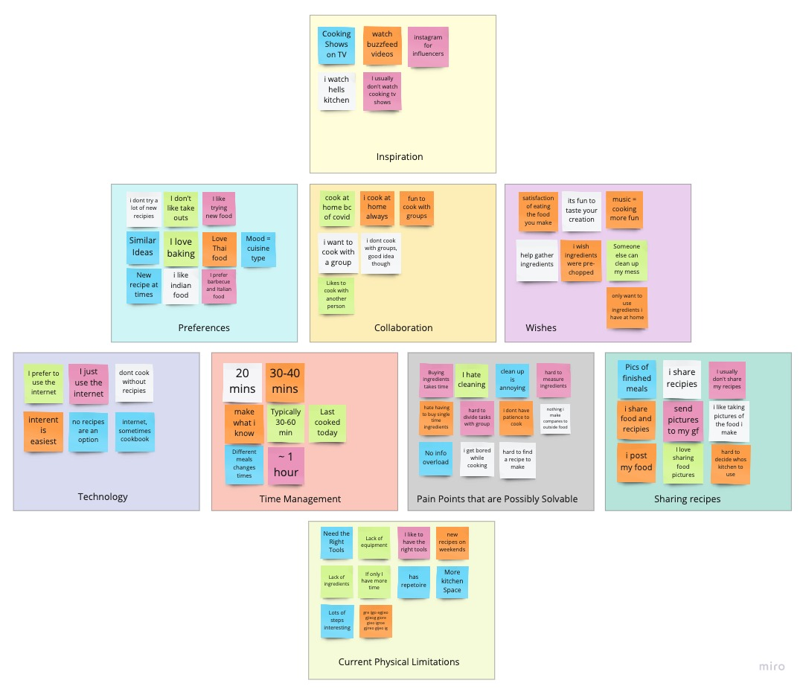
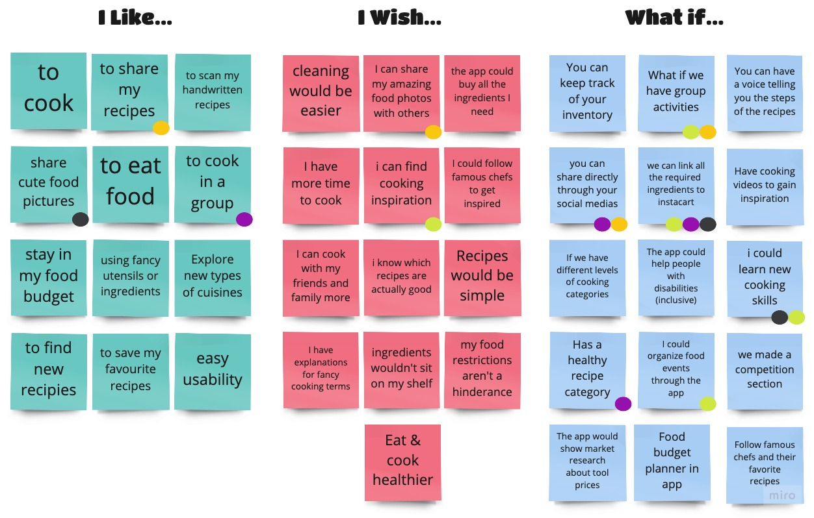
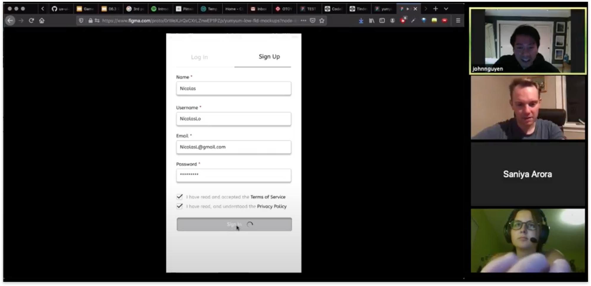

2.2 Mobile App Design: Yum Yum
Building a brand-new mobile application that solves a real, clearly identified need in users’ everyday lives.
PROBLEM: How can we make the cooking experience more enjoyable and social for anyone, espically during a pandemic? As well as create long-lasting cooking habits that the user will want to continue?
TIMELINE: 3 weeks
ROLE: UX Researcher, UI Designer, Project Manager
TOOLS: Miro, FIgma, Trello, Google Suite, Slack, Adobe Illustrator
PREFACE
With the pandemic, many people are taking up new hobbies, cooking/baking being a popular one. However, many individuals find recipes frustrating, from having to hunt down certain ingredients or following ambiguous instructions. People want to show off their food creations and improve their prowess in the kitchen, so how can we design a customizable app that will inspire users to explore more recipes, while also making cooking more social? Yum Yum was designed to help users find recipes and share food related content.
1. Empathize
The first step in our design thinking is to put ourselves in other people's shoes and connect with how they might be feeling about their cooking experience during COVID-19. In order to do this, we have conducted five one-on-one interviews; in addition, we surveyed 122 people to gather Quantitative & Qualitative data.

One-on-one Interviews:

In short, people are now baking and cooking more than ever (espically during COVID-19). Many of our respondents enjoy cooking from home and experiencing with new recipes. However, they don't have a liable source.
2. Define
After understanding our user behavior and pain points regarding cooking with and without a recipe, we begin to analyze deeper to define the core problems. This is where my team and I come together to brainstorm. Below are our Affinity Diagram, I Like, I Wish, What If model, and Priorization Matrix. By using these planning tools, this will help us come up with ideas to establish features, functions, and other elements for our mobile app.


Key takeaways:

3. Ideation
This is where my team and I begin to get creative. We want to understand who our target audiences are, and identify their need/goal.User Persona: to help us target our designs around our users.
Storyboards: to understand our user persona's actions and emotions involved using our products.
4. Wireframes
Key Insights
5. Testing
User Testing: It's important to do testing at an early stage because it reduces the risk of building the wrong product.
We did a total of 4 user tests. These are the tasks we have asked them do:
1. User must complete the sign in process as Nicolas Locke
2. User must go through the onboarding process
3. User must find the blank recipe page in the app

Another Prioritation Matrix after conducting all of our users testing.
Key takeaways:
6. Final Product
What comes next?
1. Instacart process. How can we partner with them?
2. Setting up the review option for users.
3. How to filter out faulty recipes?
4. Iterating on the add recipe option: Digitization of paper recipes. Give assistance in procedure writing (auto-complete options).
5. Incorportating revenue: advertisements, sponsored events

Other case studies: